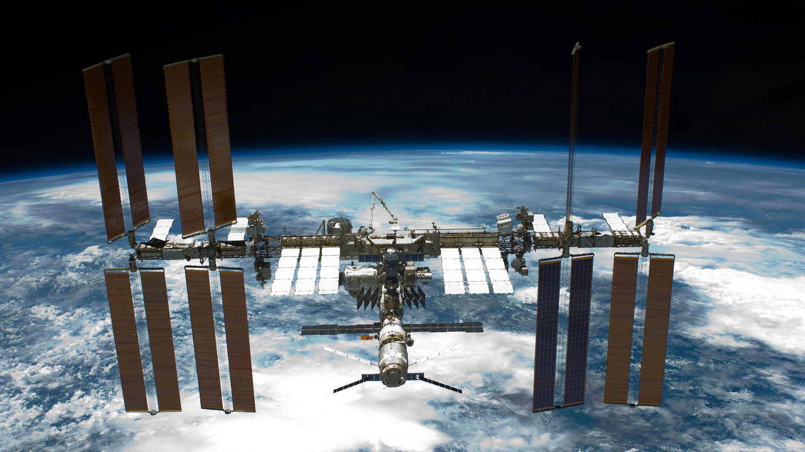

Early Beginnings
-
The roots of the Russian Federal Space Agency, commonly known as Roscosmos, trace back to
the establishment of the Soviet space program in 1955 under the leadership of visionary
engineer Sergei Korolev. This marked the initial strides in space exploration.
-
Pioneering Achievements
- 1957: A monumental achievement was reached with the launch of Sputnik 1,
the world's first artificial satellite, heralding the start of
the space age.
- 1961: Yuri Gagarin's monumental journey aboard Vostok 1 made history, marking the first human spaceflight.
-
Post-Soviet Era and Formation of Roscosmos:
- 1992: After the dissolution of the Soviet Union, Russia inherited the Soviet space program's assets and liabilities.
- 1992: Roscosmos, the governmental body responsible for space research and activities, was established as the successor
to the Soviet space program.
|

|
|

|
Key Missions and Collaborations:
- Roscosmos continued its legacy of space exploration, launching various missions, including the
joint missions with NASA and other international partners. Notable missions include ongoing contributions to the International Space Station (ISS).
Modern Era and Future Plans:
- Roscosmos maintains its active involvement in satellite launches, planetary exploration,
and scientific research. They aim to further advance
space technology, including plans for lunar missions and exploring deep space.
|
International Cooperation:
-
Roscosmos collaborates with space agencies worldwide, contributing to joint missions, sharing expertise,
and conducting scientific research.
-
Roscosmos remains a significant player in the field of space exploration, with a legacy built on pioneering
achievements, collaborations, and ongoing advancements in space technology.
|

|
"Cosmic Voyagers: Unveiling the Fleet of Roscosmos Marvels"
Embark on a celestial odyssey as we unveil the stellar ensemble of Roscosmos vehicles, the cosmic chariots that navigate the vastness of space.
From iconic Soyuz rockets to cutting-edge Progress spacecraft, each vehicle is a testament to Russian innovation, propelling humanity into the
cosmic unknown. Join us on a journey through the constellations of Roscosmos marvels, where every launch is a dance with the stars and every
mission a chapter in the epic tale of space exploration.